Higher peak throughput
Measured against the evaluated CPU-resident training baselines.
GPU-resident human-exoskeleton learning
ExoSwift trains a reusable assistance policy in minutes by keeping musculoskeletal human-exoskeleton interaction and policy learning on the GPU, then distills the policy for 100 Hz microcontroller control.
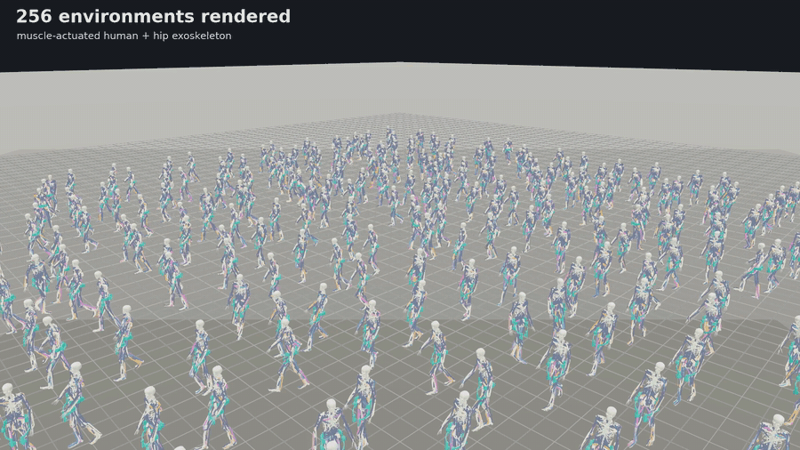
12 fps previewOverview
Musculoskeletal simulation can reduce physical experimentation in exoskeleton controller development, but human-exoskeleton physics and real-time inference remain computationally demanding. ExoSwift separates reusable human-controller preparation from downstream exoskeleton policy learning and deployment.
A frozen muscle-actuated human policy supports GPU-parallel optimization of one assistance policy across four walking speeds. Offline distillation then compresses the learned torque mapping for execution on a Teensy 4.1 microcontroller.
Measured against the evaluated CPU-resident training baselines.
Across four parallelism settings and three random seeds.
265,985 parameters in the teacher, 17,537 in the student.
Mean participant-level concordance across four speeds (n = 6).
Why GPU-resident?
Conventional pipelines step complex human-exoskeleton dynamics on the CPU while running policy inference and optimization on the GPU. ExoSwift keeps simulation, inference, and exoskeleton policy optimization on the same device.
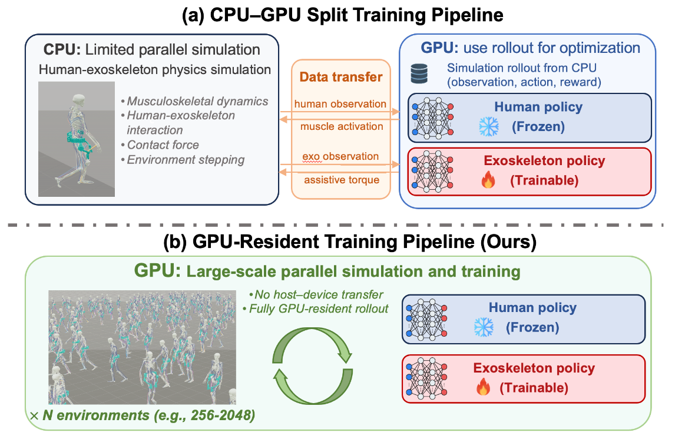
Method
The method preserves muscle-level human-exoskeleton interaction during training, while the final policy uses only deployable bilateral hip kinematics.
Continue training a pretrained muscle-actuated human policy under random bilateral hip torques, then freeze it for downstream assistance learning.
Train one exoskeleton actor-critic policy across 2,048 GPU-resident human-exoskeleton environments while reusing the same frozen human policy.
Compress the teacher’s torque mapping offline into a compact student without additional simulation rollouts, then execute it at 100 Hz on-device.
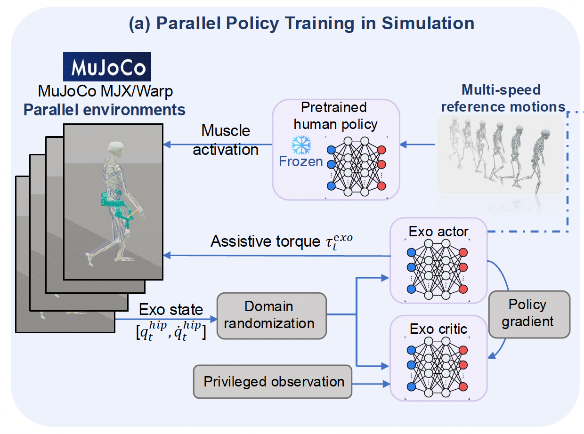
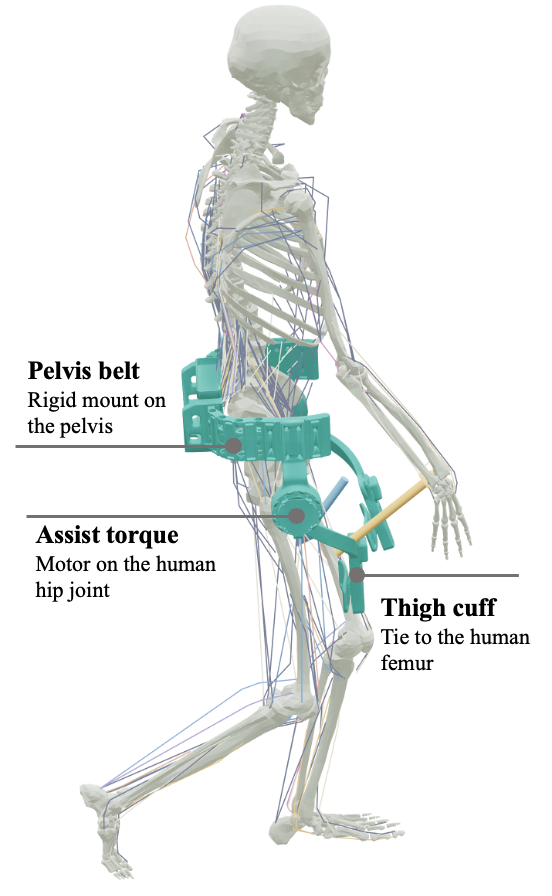
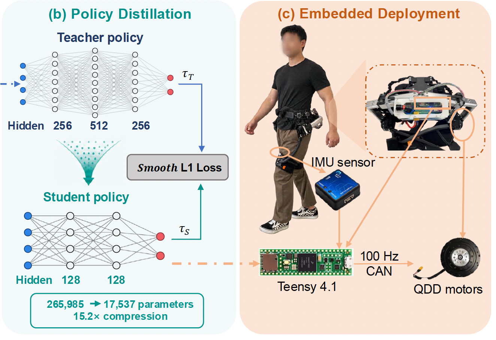
Robust human policy
A randomly initialized assistance policy can apply disruptive hip torques. Training the human controller under randomized bilateral perturbations improves tracking resilience before the exoskeleton policy begins learning.
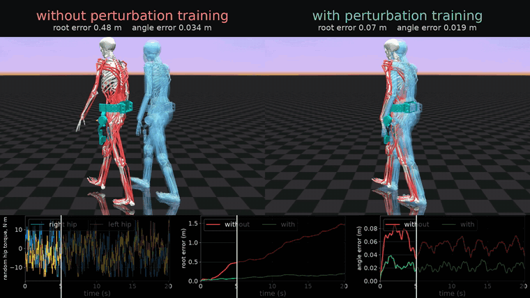
Training results
The GPU-resident trainer continues to scale beyond the point where both evaluated CPU implementations saturate.
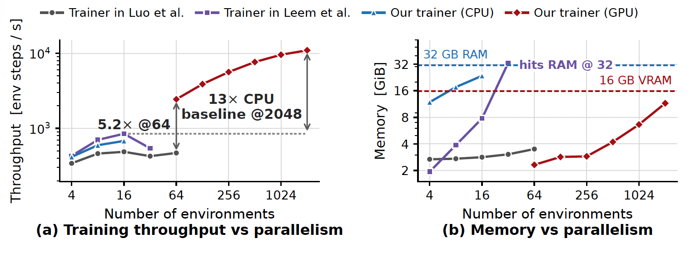
At 2,048 environments, the trainer reaches 13× the peak measured CPU-baseline throughput while occupying 72% of the 16 GB GPU.
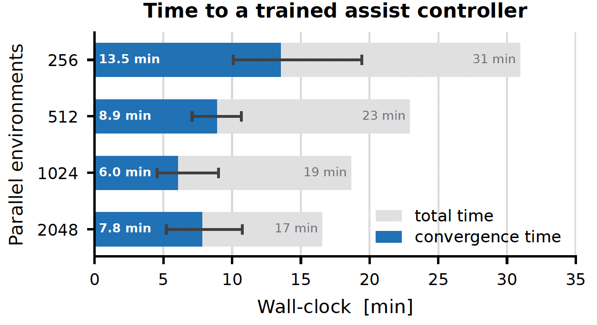
The 1,024-environment setting converges fastest; all settings converge within a 6.0–13.5 min mean range across three seeds.
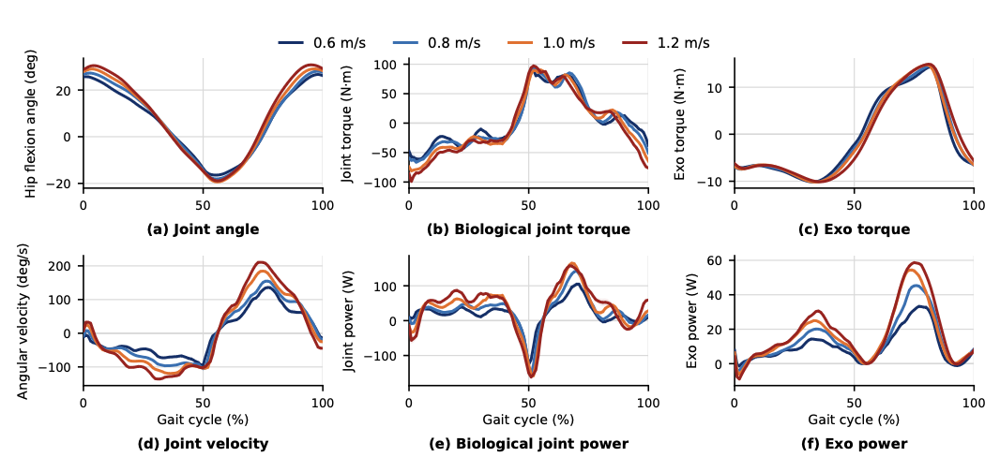
The policy increases assistance with speed while preserving a consistent gait-cycle pattern, without receiving an explicit speed command.
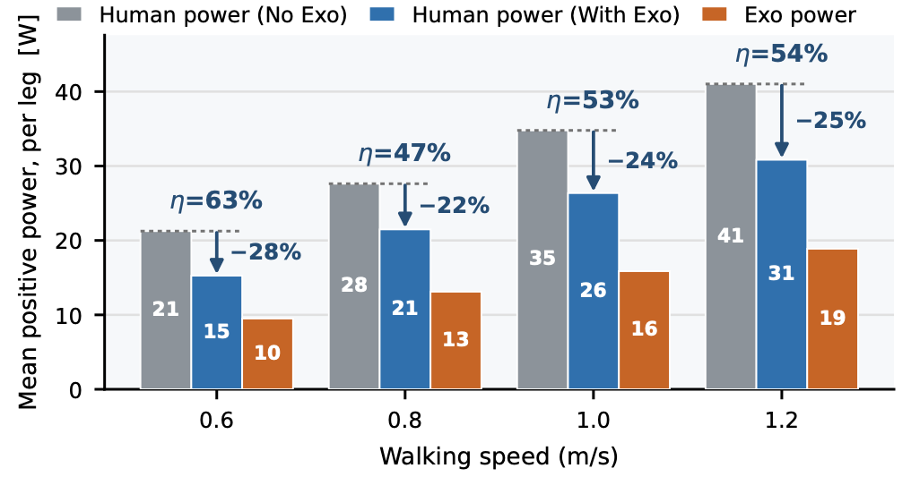
In simulation, the exoskeleton delivers 9.5–18.9 W of positive mechanical power per leg. These values are simulation outcomes, not physiological measurements.
Simulation demonstrations
The same policy generates stance-phase extension assistance and swing-phase flexion assistance from 0.6 to 1.2 m/s.
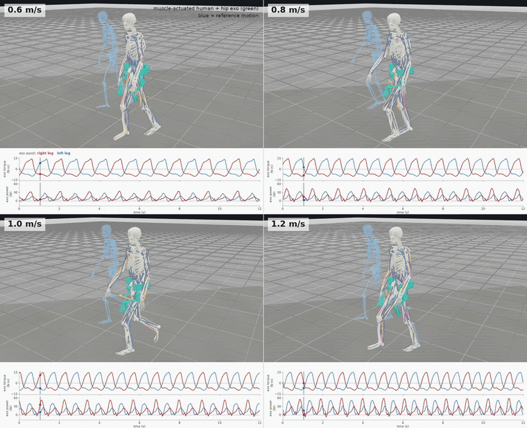
Embedded deployment
The student policy requires 2.03 ms for bilateral inference on the Teensy 4.1—about 20% of the 100 Hz control period.
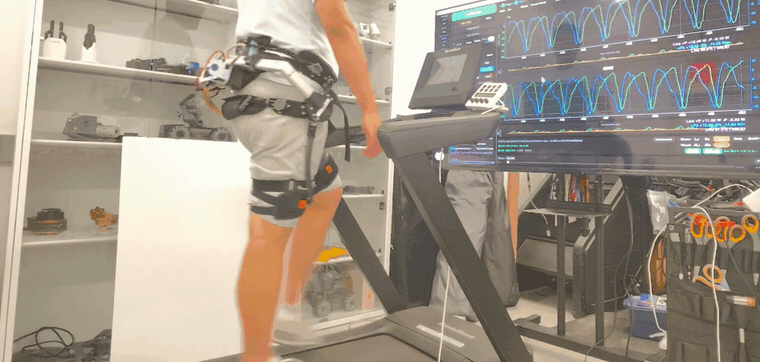
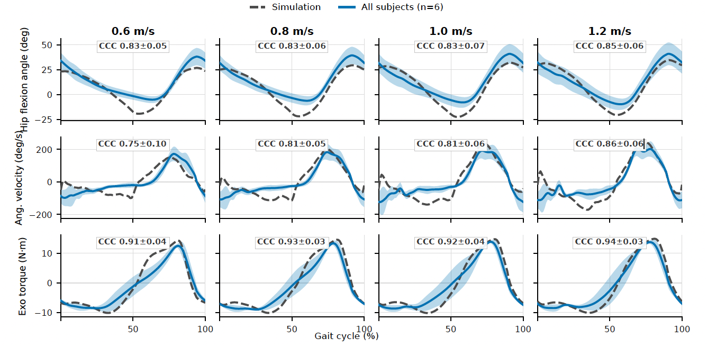
Treadmill study · n = 6
Mean participant-level torque-command CCC ranges from 0.91 to 0.94 across four walking speeds, with standard deviations of 0.03–0.04.
Manuscript
Full method details, experimental protocols, ablations, and references are available in the manuscript.